Live Lesson Diary 12:30 AM Local Time Friends S02E14 AI in the Classroom
One accountant from Moscow, one teacher on a beach-town timezone, an AI-generated presentation about a VHS tape — and a surprise guest who answered questions in Rachel Green’s own voice.
📎 Lesson Presentation
This article is built around the live lesson presentation. The full deck discussed during the session is available here:
📚 Lesson Diary · Student-Led Innovation · Sitcom-Based Learning
Somewhere in a small coastal town, a clock showed half past midnight, and an English teacher named Mae opened her laptop for one more class. Her student that night was Anatoly, an accountant from Moscow, and he opened the call with a charming time-zone confession: “Good evening for me, for you probably good night.” Mae confirmed the math out loud — “Oh, here it's 12:30 in in the morning” — and the lesson began anyway.
It turned out to be unlike an ordinary class in every way. Anatoly arrived carrying more than homework: a full presentation about “The One with the Prom Video” (Season 2, Episode 14 of Friends) that he had generated with AI tools, a plan to discuss it as a conversation rather than read it as a text, and a second surprise for later — a virtual Rachel, ready to answer questions live. This article reconstructs that midnight session step by step, because it doubles as a field manual for modern language learning: what happens when a student builds the materials, the slides get discussed like a film, and a sitcom character joins the video call.
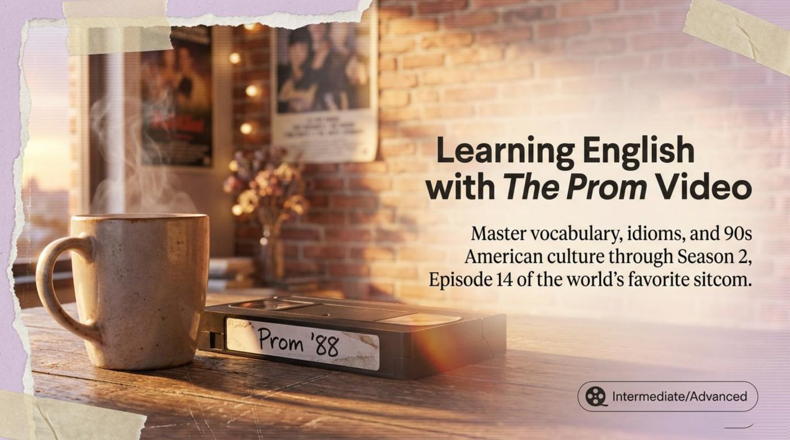
The opening exchange set the tone of warmth that lasted the whole session. The transcript preserves it in its purest form:
📋 From the live transcript
Anatoly: Good evening for me, for you probably good night.
Mae: Oh, yes. Oh, here it's 12:30 in in the morning.
Mae: My name is Mae, nice to meet you.
Anatoly: Nice to meet you, Mae. My name is Anatoly.
Mae: That's a very unique name.
Anatoly introduced himself as an accountant from Moscow whose hobbies included traveling, reading books, watching movies, and — the detail that shaped the entire lesson — “exploring AI, artificial intelligence tools.” His proof came immediately: “presentation which I posted there, I uploaded there, is created by AI.” Mae taught English part-time alongside a daytime job, lived in a small town far from the city but near the beach, and shared her student’s love of cinema. Two people, two timezones, one shared cultural vocabulary.
📌 The icebreaker deserves attention as a teaching move. Anatoly sent Mae a link to his list of favorite movies and asked her to name the ones she had seen. She scanned it and found a remarkable overlap: The Terminal, Love Actually, Breakfast at Tiffany's, The Notebook, The Breakfast Club, Friends, Big Fish, half of Mystery Train — and one film she singled out with pure delight: 🎓 “It's a Wonderful Life. I love this movie.” Notice that this tiny exchange accomplished what a textbook warm-up rarely does — it built genuine common ground before a single grammar point appeared.
Then came the method proposal. Anatoly suggested going through his deck in a very specific way: “We can go through this presentation not just reading, but more discussing plot, discussing what we can see on the slide, what AI chose for presentation because of the plot, because of idea, and so on.” Mae agreed instantly: 🎓 “Okay, sure, no problem. So, more conversation, discussion.” The key point is that the student redesigned the format — the slides became conversation prompts, not reading material.
Anatoly began his walkthrough with the cover. He read the visual storytelling aloud: a video cassette labeled “Prom 88,” a cup of coffee, an old desk, calendars on a brick wall, torn photos — “we can see like it is a little bit like torn photos.” Mae looked closer and added her own observation: 🎓 “And the the window, the walls, maybe it's a little bit similar with the actual scene, right? Like the house. Yeah, the apartment.” The AI, it turned out, had dressed the set to match the real one.
Mae asked how recent his memory of the episode was, and the answer revealed a study method worth copying. Anatoly had watched the episode again just days earlier; years ago he had started the series without finishing it, and the current rewatch felt completely different because he was watching “more precisely and with help of AI.” His verdict carried real weight: “I concluded that this movie is really a masterpiece, because it is meaningful, clever, with humor, and lots of interesting vocabulary. And characters, they are recognizable, they play very well, even negative characters also actors play them very well.”
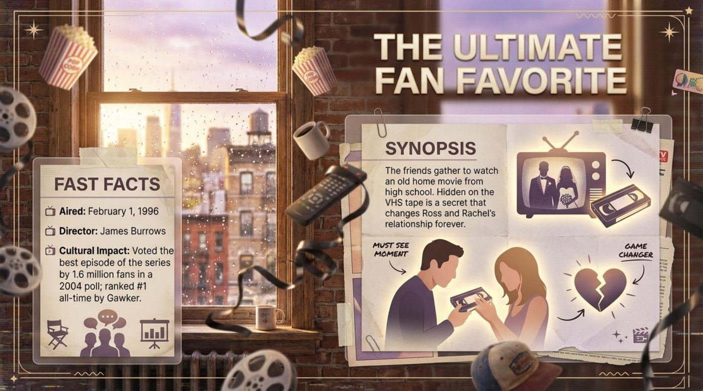
The deck’s synopsis framed the stakes before the discussion even started: “The friends gather to watch an old home movie from high school. Hidden on the VHS tape is a secret that changes Ross and Rachel’s relationship forever.” Anatoly then broke the episode into its three parts, retelling each from memory while the corresponding page confirmed the details. The first part belonged to the bracelet: “Joey buys and presents Chandler this bracelet. And Chandler doesn't like it, but because Joey was sincerely wanted to that this present would be for pleasure for Chandler, and because of it, Chandler has to wear it.” The second belonged to Monica — fired from her job, hoping her visiting parents would help with money, while they cleared out old things to make room for “sport activities” and brought along one forgotten video cassette. The third belonged to the tape itself: proof that Ross had been secretly in love with Rachel, and the reason she finally kissed him and, in Anatoly’s words, “probably gave him excuse” for the infamous pros-and-cons list from an earlier episode.
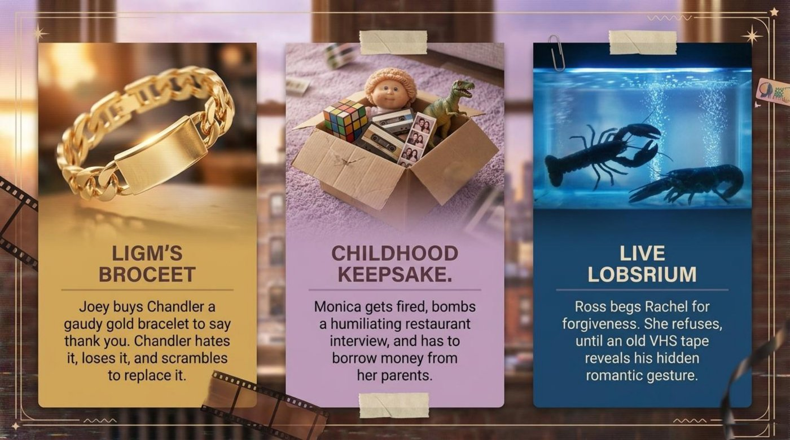
Mae summarized the structure with a teacher’s instinct for the essential: 🎓 “All right, so I understand that there are three main events in this episode. I agree: Joey and Chandler about the bracelet, and then Monica losing her job, and Ross and Rachel's video, the video tape, the VHS tape.” She then asked him to name the single scene that described the whole episode. His answer separated the objective from the personal: by the title, the cassette carried the episode; for him personally, the opening scenes of Joey and Chandler played the best — including the moment a romantic prospect cooled on Chandler after seeing the gaudy bracelet on his wrist — while the Ross and Rachel storyline remained “one of the main and the most romantic part of the movie.”
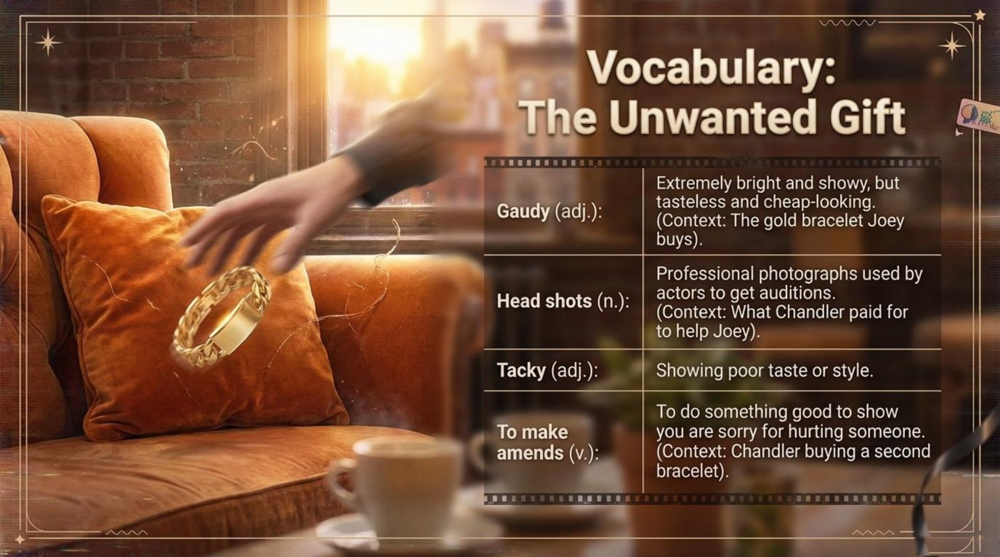
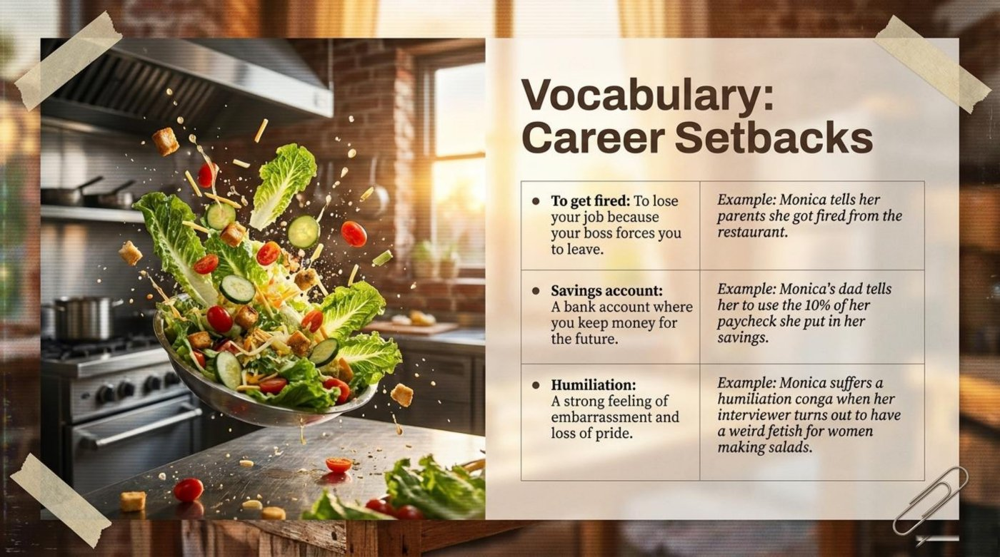
The discussion also paused on why the episode’s central joke works at all. The deck’s cultural page explains the mechanics of the era: “Technologically Blind Elders: A common 90s sitcom joke where older parents struggle to use technology, leaving the camera recording when they think it is off,” and “The Home Movie: Before smartphones, families recorded events on physical tapes. Jack and Judy accidentally recorded over the end of the prom video with their own private tape.” It should be noted that Anatoly’s live retelling and the deck’s cultural notes completed each other perfectly — the student supplied the plot, the AI supplied the context, and the teacher tied them together.
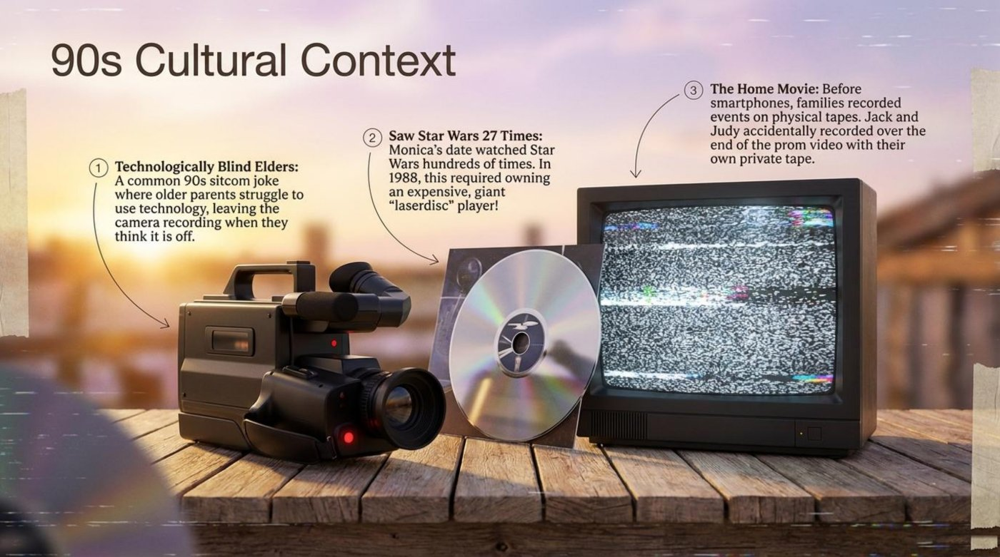
The retelling reached its natural climax with the deck’s most dramatic page: “The video reveals that when Rachel thought she was stood up, Ross secretly put on his father’s tuxedo to take her to the prom. He is left heartbroken on camera when her real date finally arrives.” And then the turn: “Rachel is so moved by Ross’s secret teenage gesture that she walks across the apartment and passionately kisses him.” The page closes with the verdict in its golden box: “Phoebe was right: He is her lobster.”
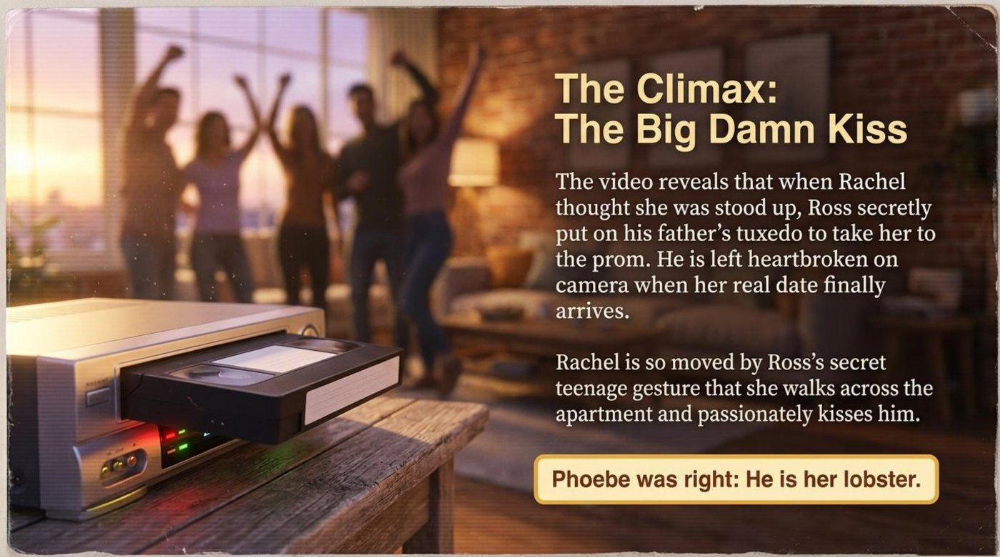
Then Anatoly unveiled the part of the lesson no lesson plan had predicted. “We can incorporate to our conversation one AI, if you don't mind. And as a virtual... virtual Rachel.” The guest greeted the room: “Hey there!” Anatoly set the scene the way a director briefs an actor — they were mid-lesson, watching the old cassette, and the AI was to play Rachel seeing her teenage self on screen. What followed deserves to be quoted in full, because it is a live demonstration of AI-powered speaking practice:
“Oh my gosh, is that really me? Look at that dress! And my hair is so big! I can't believe I actually wore that. Who is the person who thought that was a good idea? Wait, is this really happening right now?” — Virtual Rachel · AI role-play via Sesame
Anatoly kept the scene moving and steered the conversation toward Ross. The AI’s answer blended character voice, humor, and precise sitcom memory:
“Oh, look at him. He's just so... Ross. I can practically feel the intensity coming off the screen. You look so sweet! But also like he's one second away from giving me a lecture on the correct way to organize a bookshelf. It's actually kind of adorable how serious he is, isn't it?” — Virtual Rachel, on teenage Ross
Mae’s reaction was the moment of pure, honest wonder that every teacher knows. She admitted she did not know what to ask the character, and then said it plainly: 🎓 “I don't know what to ask. I'm amazed, actually.” The AI leaned into the comedy of the situation and gently pushed her to participate:
“I know, right? Does she really think she's pulling that look off? I mean, I love a good fashion risk, but that's practically a crime. Mae, you can ask Rachel your question now.” — Virtual Rachel, inviting the teacher
Anatoly stepped in with the question of the night: “Rachel, are you in love with Ross?” The answer ran a full emotional arc in four sentences — affection, hesitation, and a joke at Ross’s expense:
“Oh, goodness. I mean, Ross is Ross. He's wonderful and sweet and totally obsessed with me, which is great, but did you see him at the prom? That whole 'I can't believe I'm doing this' energy? It's a lot to process. I think... I love him, really, but sometimes I just need to take a deep breath and wonder if there's someone else out there who doesn't talk about paleontology for three hours straight.” — Virtual Rachel, on the question of the night
Anatoly stopped the session there and asked Mae for her verdict on the technology itself. She wanted to know the tool behind the performance, and the answer was sesame.com. Her assessment doubled as the lesson’s unofficial thesis: 🎓 “It's amazing! Yeah, they can portray the role, and you can just ask them questions.”
It is worth noticing that Anatoly’s most impressive skill was not asking the AI questions — it was managing it. He briefed the character, redirected the scene twice, invited his teacher into the exchange, and cut the performance at exactly the right moment: “I stopped it.” Directing an AI guest in real time is itself a demanding, improvised, entirely English-language exercise.
The lesson had one more layer to reveal. Anatoly shared a second link — a web page he had built with another AI directly from the presentation — and guided Mae through it: “you can see slides which we saw here... you can see some meta forms, explanation, and even flash cards in the in the second part. Flash cards, if you click on flash card, you can see meaning of words and so on.” Mae’s verdict was immediate: 🎓 “Oh, yes. It's really good for learning English. Yeah.” The interactive flip-cards below rebuild that exact moment — the same ten key terms the deck and the lesson circled, one tap away from their meanings.
Before flipping, it is worth reading the words the way the lesson met them: in themed collections, tied to scenes. Notice that every term orbits a single theme — hidden feelings about gifts, money, and love.
The deck defines to stand (someone) up as “To fail to meet someone for a planned romantic date without telling them,” with the context locked to the plot: “In the video, Rachel is waiting for her date, Chip Matthews. When he is late, the friends worry that Chip has stood her up.” The grammar note matters: “This verb is separable. (e.g., ‘Chip stood Rachel up’ or ‘Chip stood up Rachel’).” Pay attention to pronouns — “stood her up” is correct, “stood up her” is not.
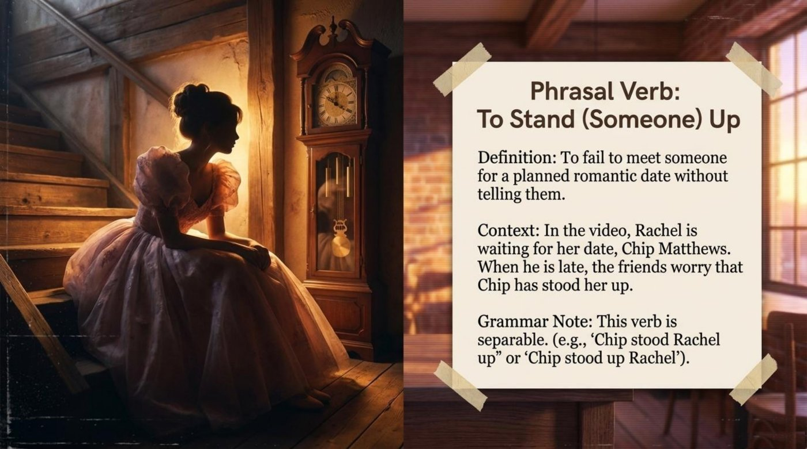
Rachel’s most quotable line of the episode compresses the entire Ross-and-Rachel history into one boxing metaphor:
“I fall for you and I get clobbered, you then fall for me and I again, somehow, get clobbered.” — Rachel, quoted in the deck
The deck separates the two senses side by side: Literal Meaning: “To be hit very hard physically.” Sitcom Meaning: “To be emotionally defeated, rejected, or badly hurt in a relationship. Rachel is tired of being emotionally hurt by Ross.” This is a signature move of sitcom English — pain becomes punchline through wordplay — and it is exactly the kind of line a learner catches only on the second, AI-assisted watch.
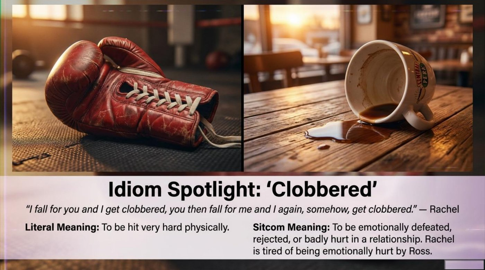
The rule, quoted from the material: “We use used to + base verb to describe past habits or states that are no longer true.” The examples come straight from the flashback magic: “Monica used to be heavier. (The audience meets ‘Fat Monica’ for the first time).” “Rachel used to have a much larger nose.” “Ross used to have an afro and a moustache (looking like Gabe Kaplan).” The structure works overtime in this episode because the whole plot is a time jump — the tape shows who everyone used to be, and the midnight lesson showed who the learners used to be before AI entered their routine.
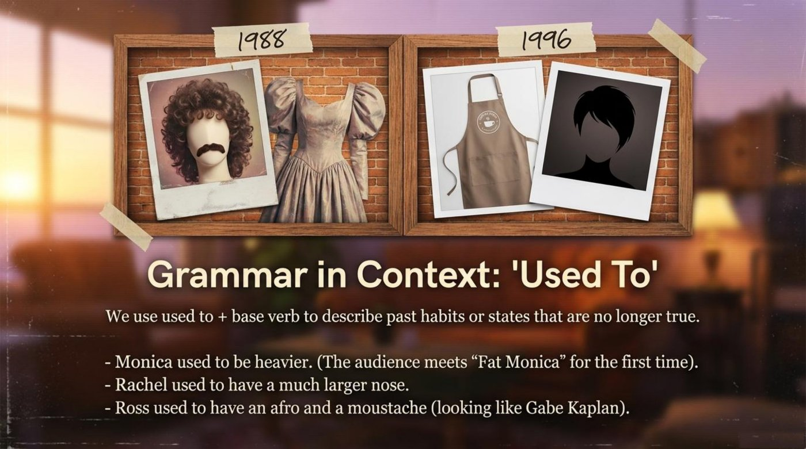
The flash-card section of Anatoly’s page is rebuilt below as a full deck. Tap or press Enter on any card to turn it over: the front shows the term with a one-line hook, the back holds the literal meaning, the episode context, a quote from the material, and a note on why the word matters. The button flips the whole deck at once.
Anatoly retold Phoebe’s theory live, searching for the exact word for a lobster’s claw and landing on the idea of hands joined forever. The deck preserves the quote that anchors it all:
“It’s a known fact that lobsters fall in love and mate for life. You can actually see old lobster couples walking around their tank, holding claws.” — Phoebe
The cultural note completes the picture: “In English pop culture, ‘to be someone’s lobster’ means to be their soulmate — the person they are destined to be with forever, no matter what happens.” The metaphor’s power lies in its double duty — absurd biology on the surface, complete sincerity underneath — and the episode spends forty minutes proving Phoebe right.
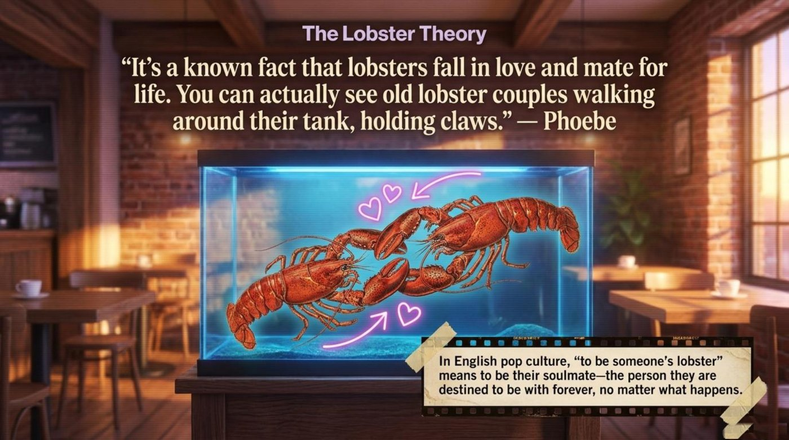
The synopsis calls the tape’s cargo “a secret that changes Ross and Rachel’s relationship forever,” and the cultural note explains the mechanism: the parents’ recording-over accident. The tape is an honest witness — it preserves what people feel when nobody important is checking the camera. Ross’s heartbreak in his father’s tuxedo survived eight years precisely because nobody bothered to look. In the lesson itself, a second kind of tape was running the whole time: the transcript, preserving every improvised sentence of a midnight conversation for whoever reads it next.
The storyline card reads: “Joey buys Chandler a gaudy gold bracelet to say thank you. Chandler hates it, loses it, and scrambles to replace it.” As a symbol, the bracelet represents sincerity without suitability — completely genuine, completely mismatched, which is why it hurts more than a bill. Anatoly’s live emphasis fell on the most humane detail: Chandler wears the thing because Joey was sincere. The material’s own vocabulary closes the loop with “to make amends” — friendship as repair work, love shown in the fixing rather than the buying.
The lesson produced one symbol of its own. Phoebe’s theory claims that the right partner stays with you for life no matter what happens — and the virtual Rachel demonstrated the learner’s version of the same law. A show a student truly loves never leaves; it returns through rewatches, through AI-built decks, through an improvised character interview at half past midnight. The guest also carried the episode’s theme one step further: Rachel on the tape hid her feelings for eight years, and Rachel in the classroom admitted hers only under questioning — “I love him, really, but…” Hidden love, once surfaced, rewards everyone who waited.
Part of Anatoly’s page tour was dedicated to self-testing. He guided Mae to the check built into the material: “there is a like test, comprehension check, where it is like on the desk, green green desk... When we can click answer and we can see result.” The pages below show exactly what they found — a diner chalkboard of true-or-false statements and a legal pad of short-answer prompts. The interactive quiz that follows rebuilds that loop with instant feedback, a live score, progress dots, and explanations drawn from both the deck and the live transcript.
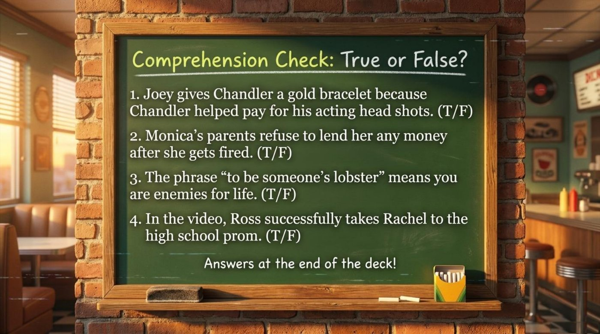
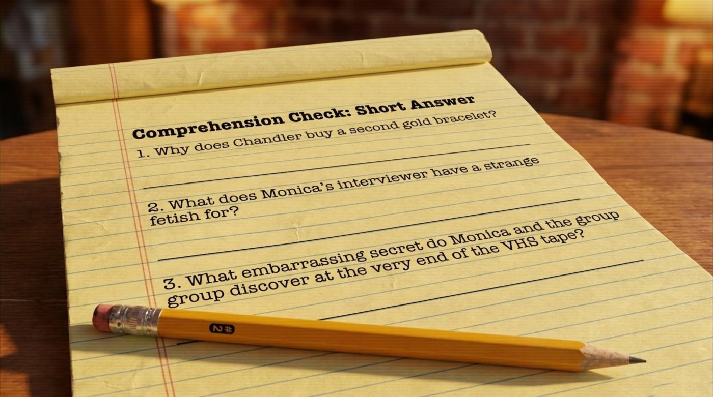
The transcript ends mid-discovery, and the final discovery is the perfect closing image. Anatoly directed Mae up the page to a golden button on the left: “Can you see ‘Play the game’?” She found it, pressed Play, scrolled a little, clicked “Insert Tape,” and a shelf of five mini-games appeared — the first one hosted by Chandler and titled “The Unwanted Gift,” a fill-in-the-blanks challenge opening with the words “Joey buys Chandler...” The midnight lesson thus ended in the most fitting way possible: the teacher, guided by her student, playing a game his AI had built about a gift that missed its mark — while a bracelet’s worth of sincerity hung in the air between two colleagues who had met an hour earlier.
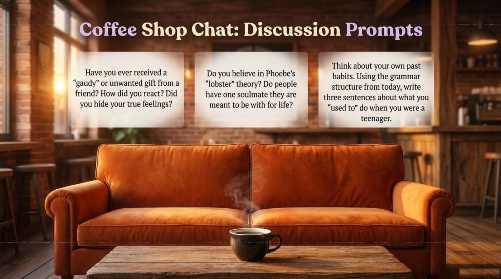
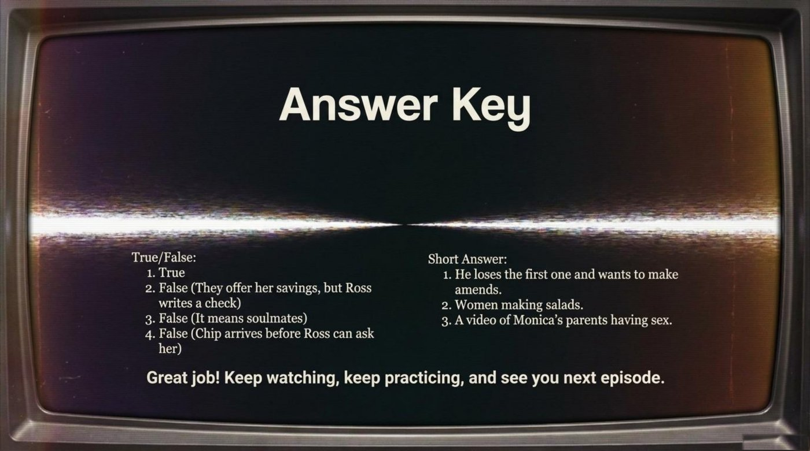
The deck’s final page ends with the sentence that doubles as the lesson’s report card: “Great job! Keep watching, keep practicing, and see you next episode.” The main takeaway runs deeper than any single word list: the roles in a classroom can be remixed. A student can arrive with the materials, the method, the AI guest, and the arcade — and a teacher, even at 12:30 in the morning, can still find something genuinely new to be amazed by. 📌 The call to action is simple and concrete: pick a favorite episode, build a deck about it with AI, interview one of its characters live, write three true-or-false questions for yourself, and then bring the whole package to your next lesson — at whatever hour your timezone considers civilized. Keep watching, keep practicing — and see you next episode. 🦞
Open the original lesson materials discussed in this live session: